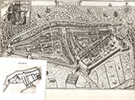
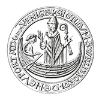

De geschiedenis van de scheepsbouw in de Nederlanden tot ongeveer 1600 is een indrukwekkend verhaal over evolutie, aanpassing en verbetering over de hele linie.1 De weg naar succes vertoont geen duidelijke en consistente lijn, maar was eerder het resultaat van een complexe wisselwerking tussen scheepsbouwers en hun afnemers, waarbij ontwerpen en vernieuwingen van elders werden overgenomen. Hierdoor ontstond in de loop van vier eeuwen een steeds breder scala aan schepen om te voorzien in de veranderende behoeften voor het vervoer op zee. Het patroon is soms lastig te volgen, maar de resultaten zijn duidelijk waarneembaar. Het succes op lange termijn heeft niet alleen geleid tot verdere vooruitgang op het gebied van scheepsbouw, maar heeft ook invloed gehad op de economische en culturele ontwikkeling van de Nederlanden. De mensen in de steden combineerden technologische vernieuwingen met een grotere efficiëntie om aan de veranderende behoeften van de verladers te voldoen. De schepen zelf vormden een belangrijk beginpunt in de indrukwekkende ontwikkeling van de Nederlandse scheepvaart. Tijdens de hoge en late middeleeuwen en vervolgens gedurende de zestiende eeuw ontstond een nieuwe koopvaardijvloot, die de maritieme expansie in de Gouden Eeuw mogelijk maakte. De evolutie van het zeilschip, de flexibiliteit van de scheepsbouwers om hun klanten te voorzien van schepen die aan hun eisen voldeden en bovendien de grotere duurzaamheid van die schepen waren uiteindelijk essentiële factoren voor het handelssucces van de Nederlanders aan het einde van de middeleeuwen en in de eeuwen daarna. Vanaf de dertiende tot en met zestiende eeuw legden scheepsbouwers de basis voor de zeer succesvolle Nederlandse scheepvaartsector van de Gouden Eeuw. De scheepsbouw en alles wat daarbij hoorde, van de productie op de werven tot de verspreiding van technische kennis, de opleiding van ambachtslieden en de financiering van de scheepsbouw, begon klein en eenvoudig maar bereikte omstreeks 1580 het hoogste niveau ter wereld.

Het scheepvaartbedrijf veranderde drastisch tussen 1200 en 1580. Kleinschalig vervoer van allerlei goederen over binnenwateren en langs de kust groeide uit tot transport van grote ladingen over steeds langere afstanden. Die transformatie vond plaats over een lange periode, waarbij het tempo van de veranderingen in de loop van de tijd steeds hoger kwam te liggen. De groei van de bevolking in Europa en van de Europese economie waren in dat proces belangrijke factoren. Regionale en internationale politieke ontwikkelingen, zoals de consolidatie van het Bourgondische gezag en vervolgens het bewind van de Habsburgers (1482-1556) zorgden voor een betere bescherming van kooplieden en verladers bij handelsgeschillen. Zo nodig lieten die heersers hun macht gelden tegenover andere monarchen en machtshebbers. Door de pestepidemieën van de veertiende eeuw werd de bevolking van Europa bijna gehalveerd, wat leidde tot een sterke economische krimp in delen van het continent. De economie van de Nederlanden doorstond die storm goed. Een belangrijke factor daarbij was de aanhoudende groei van de scheepvaart, met name het vervoer over steeds grotere afstanden.2
Bronnen
De kwantiteit, kwaliteit, reikwijdte en betrouwbaarheid van de beschikbare bronnen vormen de basis voor het doen van uitspraken over de schepen uit de late middeleeuwen. De laatste poging om een samenvattend overzicht van de scheepsbouw in die periode te geven, dateert van zo’n vijftig jaar geleden.3 Sindsdien zijn er enorm veel nieuwe informatie en inzichten bijgekomen. Vanaf de jaren vijftig van de vorige eeuw is de kennis over premoderne schepen en hun ontwerp, constructie, zeileigenschappen en tuigage fors toegenomen. De indrukwekkende resultaten van maritiem archeologisch onderzoek van de afgelopen jaren maken het interpreteren van andere bronnen vaak gemakkelijker en veel nauwkeuriger. Met nieuwe technieken en door het ontwikkelen van nieuwe procedures en bijbehorende apparatuur om vondsten op een systematische manier te bestuderen, hebben archeologen hun onderzoeksterrein sterk verbreed en verfijnd. In 1932 werd de Afsluitdijk voltooid en konden delen van de voormalige Zuiderzee worden ingepolderd. Door het droogvallen van de zeebodem kwamen scheepswrakken uit de twaalfde tot en met de twintigste eeuw ineens gemakkelijk beschikbaar voor wetenschappelijk onderzoek. Aan het begin van het nieuwe millennium was het totaal aantal bekende wrakken opgelopen tot 435.4 Met vergelijkbare methoden heeft onderzoek in andere delen van Noord-Europa de kennis die in Nederland is opgedaan verder aangevuld. De resultaten laten zien hoe de ontwerpen en bouwmethoden in de Nederlanden vergelijkbaar waren met, maar ook verschilden van die elders in Europa. Dat leverde inzicht op in de Nederlandse scheepsbouwpraktijk en de voordelen die Nederlandse kooplieden hadden wanneer ze gebruik maakten van inheemse schepen.
Havensteden stelden in de loop van de tijd steeds meer regels vast voor de scheepvaart. Belastingen en openbare verkopingen van schepen in de grootste havens werden vastgelegd in stedelijke registers. Geregistreerde hoeveelheden lading geven aan welke scheepstypen in de vaart waren en hoe groot ze waren. De afmetingen van schepen zijn ook af te leiden uit regels over beperkingen in de ruimte in en toegang tot de haven. In de zestiende eeuw hielden de steden vaak direct of indirect toezicht op de bouw van schepen of het laden en lossen ervan. De regels die daarbij werden gehanteerd, bieden – als ze tenminste zijn overgeleverd – inzicht in de gang van zaken op de kades, in de denkbeelden over het bouwen van doelmatige vaartuigen en zelfs in de dagelijkse praktijk in de haven. Gegevens over individuele scheepswerven en hun opdrachtgevers en over de mensen die de werven exploiteerden zijn zeldzaam. Ze zijn uiterst waardevol omdat ze ons een blik gunnen in de financiële transacties die aan de hele scheepvaartsector ten grondslag lagen.
Eigentijdse voorstellingen vormen cruciale bronnen van kennis over vorm en verscheidenheid van schepen. Zulke afbeeldingen zijn nog steeds essentieel voor ons inzicht in het schip in de middeleeuwen. Ongeveer driehonderd jaar lang, van het einde van de twaalfde eeuw tot het einde van de vijftiende eeuw, gebruikte een aantal havensteden aan de kusten van Noordwest-Europa zegels om de authenticiteit van de door hen uitgevaardigde documenten aan te tonen. Op die zegels waren vaak schepen afgebeeld, vermoedelijk het soort schepen dat die havensteden bezocht. Het ronde formaat van een zegel legde kunstenaars beperkingen op dus is het de vraag hoe nauwkeurig die afbeeldingen zijn. Verder zijn er afbeeldingen van schepen op schilderijen, prenten en als verluchting in manuscripten. In de Bijbel en in heiligenlevens zijn bijvoorbeeld teksten te vinden met afbeeldingen van schepen. Iets dergelijks geldt ook voor reliekschrijnen en voor de vaak naïeve graffiti met schepen op de muren van kerken. Die afbeeldingen laten enigszins zien hoe schepen er uit zagen. Ze zijn zeldzaam en in het laatste geval bieden ze meestal niet meer dan een impressie. De afbeeldingen zijn wel zo duidelijk dat het mogelijk is om op basis van een aantal vaste kenmerken schepen in categorieën in te delen. Technische details zijn echter vaak onvolledig of onnauwkeurig weergegeven omdat kunstenaars zelden of nooit kennis hadden van de scheepsbouw of de praktijk van het zeilen. Dat gold meestal minder voor de nog zeldzamere votiefmodellen die als dank voor een behouden vaart in kerken in havensteden en vissersdorpen werden opgehangen.5 Die modellen zijn vermoedelijk gemaakt door mensen uit de omgeving van de kerk die vertrouwd waren met de schepen waarnaar die modellen verwezen. Een nadeel voor de betrouwbaarheid van die modellen is het feit dat ze hoog in de kerk werden opgehangen. De bouwers pasten de vorm van het schip aan om de verhoudingen vanaf de grond correct te doen lijken. Hoe sterk die modellen zijn vervormd is moeilijk te zeggen. Er is gelukkig steeds meer beeldmateriaal in allerlei vormen beschikbaar, vooral voor de vijftiende en nog meer voor de zestiende eeuw. Daardoor krijgen we ook een beter beeld van de kwaliteit en de informatiewaarde van zulke afbeeldingen.6
Scheepstypen vóór 1200: het begin van een ontwikkeling
In de vroege middeleeuwen vormden de Nederlanden een gebied dat zich uitstrekte van het noordoosten van Frankrijk tot ongeveer de huidige grens tussen Nederland en Duitsland. Schepen waren toen nog gering in aantal en klein van formaat. Toen in de dertiende eeuw de reikwijdte van handel toenam, veranderden ook de schepen en de manier van bouwen. In periode daarvoor bouwde men hoofdzakelijk schepen voor de binnenvaart. Het vervoer van goederen per schip was doorgaans sneller en goedkoper dan over land en leverde dus meer op. Een regio had dan ook veel baat bij bevaarbare waterwegen over rivieren, meren en kanalen.7 Kleine vaartuigen met een geringe diepgang zorgden voor het binnenlandse vervoer tussen agrarische gebieden onderling en van en naar de steden die voor hun bevoorrading afhankelijk waren van het platteland.8 De bouw en reparatie van schepen vond plaats op eenvoudige en vaak, vanwege het ontbreken van financiële middelen, tijdelijke werven. Grondstoffen waren over het algemeen van lokale oorsprong, zoals hout uit nabijgelegen bossen. De benodigde grote hoeveelheden ijzer, voornamelijk spijkers, kon lokaal worden geproduceerd of, vanwege hun kleine omvang, eenvoudig van elders worden aangevoerd.
In de elfde en vooral in de twaalfde eeuw groeide de bevolking en breidde de handel zich uit. Waterwegen maakten handel over steeds grotere afstanden mogelijk. Over water was er toegang tot de Noordzee en tot het Rijndal met zijn vele zijrivieren. Zo konden handelscontacten worden gelegd met de Duitse gebieden, Engeland en Scandinavië. De rivieren maakten ook handel mogelijk vanuit streken ten zuiden van Vlaanderen met de snel groeiende steden in dat graafschap. Vooral graan was daarbij een belangrijke lading. Vlaanderen was in de dertiende eeuw het belangrijkste centrum van de internationale handel in Noordwest-Europa. Vervoer met kleine schepen zorgde voor gemakkelijke lokale en regionale verspreiding van de producten van de Vlaamse industrie en van de invoer uit het hele Noorden. De groei van de handel bood zeevaarders uit de Nederlanden de kans om langere reizen te maken. Scheepsbouwers die zich tot dan toe grotendeels hadden beperkt tot de constructie van kleinere binnenschepen stonden voor de uitdaging om zeewaardiger vaartuigen te ontwikkelen.
Schepen voor langere afstanden werden omstreeks 1200 nauwelijks gebouwd in de Nederlanden. Lokale bouwers en kooplieden waren voor zeewaardige koopvaardijschepen aangewezen op voorbeelden en sterk uiteenlopende ontwerptradities uit andere delen van Noord-Europa. In de handen van de scheepsbouwers van de Nederlanden dienden deze buitenlandse scheepstypes als uitgangspunt voor een steeds breder aanbod van zeegaande schepen; de basis voor lange-afstandshandel vanuit de Nederlanden. De voorbeelden waren afkomstig van de Britse eilanden, de Franse westkust en van de Duitse-, Deense- en Noorse kusten langs de Noordzee. In sommige gevallen gebruikten handelaars voor de zeevaart zeilschepen die ook op binnenlandse routes dienst deden. Deze schepen hadden zelden of nooit een dek of een apart ruim voor het vervoer van vracht. Om bruikbaar te zijn was een hele reeks veranderingen nodig om die kleine schepen tot zeewaardige vrachtvaarders te maken.
Rond 1200 waren er in de Nederlanden drie prominente scheepstypen – soms ook hier gebouwd – die voor de zeevaart geschikt waren. Dat waren het Scandinavische of Vikingschip, de hulk, ook wel het Utrechtse type genoemd, en de kogge. Geen van die drie, in het bijzonder de kogge, was een strikt gedefinieerd scheepstype. Het gaat meer om een verzameling van ontwerpkenmerken die elke scheepsbouwer op een eigen wijze combineerde waardoor elk schip zijn eigen vorm kreeg. Een aantal schepen van verschillende grootte had gemeenschappelijke kenmerken, maar het gaat te ver om ze samen te voegen tot één categorie. De term kogge werd in de middeleeuwen in documenten gebruikt om bepaalde schepen aan te duiden, maar historici en archeologen gaven er in de twintigste eeuw een eigen definitie van. Koggen hadden vanaf ongeveer 1200 een aantal kenmerken gemeen met diverse schepen in het noorden van Europa. De term kogge refereert in feite aan een levendige scheepsbouwtraditie; iets wat overigens ook geldt voor andere scheepstypen.9 De drie types, het Vikingschip, de hulk en de kogge, deelden één gemeenschappelijk kenmerk: er was weinig variatie in het zeilplan. Ze hadden altijd één mast met één vierkant zeil. De belangrijkste vorm van de voortstuwing was dus min of meer gelijk. De vorm van de romp en de manier waarop de bouwers die romp waterdicht maakten, varieerde echter sterk tussen de drie types, evenals de stuurinrichting. Doordat al die kenmerken in de loop van de tijd voor elke categorie veranderden, ontstond er een nogal verwarrend typologisch beeld.

In de negende eeuw kwamen de Vikingen regelmatig naar de Nederlanden en ontstond er op de Friese (wadden) eilanden voor de kust zelfs een tijdelijke Vikingnederzetting die in de negende eeuw door de Karolingische heersers werd erkend. De Vikingen bouwden hun boten overnaads met overlappende rompplanken. Afgezien van het formaat waren alle Vikingschepen op dezelfde manier gebouwd met variaties in de voortstuwing en in de verhouding tussen lengte en breedte.10 Grotere schepen bestemd voor vrachtvervoer, vaak knarr genoemd, beschikten slechts over een of twee paar roeiriemen ter ondersteuning bij het zeilen door smalle wateren. Vrachtschepen hadden een lengte/breedte-verhouding van ongeveer 3:1, terwijl oorlogsschepen zoals de skeið of snekkja, ook wel bekend als longships, een verhouding van 5:1 konden hebben.11 Afhankelijk van de lengte konden ze over tientallen roeiriemen beschikken. Een stuurriem aan het achterschip was de gebruikelijke manier om te sturen. Door de symmetrie van de romp was zo’n stuurinrichting zelfs zeer effectief want zelfs lichte bewegingen van het roer konden de koers veranderen. Kleine versies van het Vikingschip konden ver de rivieren opvaren en zelfs door de bemanning over land worden gedragen als de doorvaart ergens onmogelijk was. Boten voor lange riviertochten waren zwaarder gebouwd dan de zeegaande oorlogsschepen en dat gold ook voor vrachtschepen die de Nederlanden aandeden.12
Vanaf de negende eeuw namen de Scandinavische vrachtschepen in omvang toe. Vermoedelijk namen ze tot de dertiende eeuw een groot deel van de zeevaart in Noord-Europa voor hun rekening. Naarmate de schepen groter werden, verdwenen de roeiriemen en namen ze enkele kenmerken over van andere types, waaronder mogelijk in de late middeleeuwen het stevenroer.13 Terwijl de bouwers in de vroege middeleeuwen planken maakten door boomstammen te kloven, werd het in de dertiende eeuw gebruikelijk om te zagen. Wel werd er nog steeds geklonken met een combinatie van houten pennen en ijzeren spijkers. In 1200 lijkt dat de norm te zijn geweest voor alle schepen ongeacht de omvang of lengte. Terwijl in de Nederlanden zeker tot in de dertiende eeuw schepen van het Noordse type bekend waren en men ook relatief grote versies kon bouwen, was dit niet het meest gebruikelijke scheepstype. Dit ondanks het feit dat deze schepen konden bogen op een aantal goede kenmerken zoals flinke ruimen en goede of zelfs betere vaareigenschappen dan andere schepen waardoor ze concurrerend bleven in de zeevaart.14 Het lijkt erop dat de bouwers en reders in de Nederlanden het Noordse type kenden en inzetten toen de handel met Noordoost-Europa toenam. Mogelijk nam het gebruik van deze schepen al in de dertiende eeuw sterk af, maar het bleef niettemin van invloed op de bouw van alle andere scheepstypen die later in de middeleeuwen in de Nederlanden bekend werden.
Het Utrechtse type, zeer waarschijnlijk van Keltische oorsprong, kon tegen 1200 de open zee op. Waarschijnlijk begonnen als een uitgeholde boomstam met aan de zijkanten extra planken, ontwikkelde het zich tot een boot met een gebogen romp, ongeveer in de vorm van een banaan.15 Er zijn op uiteenlopende plaatsen minstens negen vaartuigen uit de vroege en hoge middeleeuwen gevonden met dezelfde kenmerken, onder meer bij Antwerpen en Londen. De wrakken hadden meestal geen kiel. De centrale plank was oorspronkelijk een uitgeholde boomstam met brede langsscheepse gangen eraan bevestigd. Die planken bleken gemakkelijker te maken en te bevestigen dan het uithakken van een grote boomstam. Een grotere flexibiliteit in combinatie met een afnemend aanbod van grote bomen kan de verschuiving verklaren naar volledig beplankte bodems vanaf ongeveer het jaar 1000. Alle planken kwamen samen bij de boeg.16 Om de planken op hun plaats te houden, hadden ijzeren spijkers rond 1200 grotendeels de tot dan toe gebruikelijke houten pennen vervangen.17 Het maken en bevestigen van houten pennen was arbeidsintensiever, maar ze waren goedkoper, lichter en flexibeler, ze roestten niet en waren, afhankelijk van het soort hout dat werd gebruikt, vaak sterker dan ijzeren spijkers.18 Schepen van dit type voldeden het beste op de binnenwateren. Naarmate de afmetingen toenamen en er betere methoden kwamen om planken vast te zetten, konden sommige varianten van dit scheepstype ook korte zeereizen maken, bijvoorbeeld naar Engeland.
De sterke gelijkenis tussen het Utrechtse type en de laatmiddeleeuwse hulk geeft aan dat dit laatste type, dat in de vroege middeleeuwen hoofdzakelijk op de binnenwateren werd gebruikt, zich van de twaalfde tot de vijftiende eeuw ontwikkelde tot een bruikbaar vrachtschip op volle zee.19 De hulk had een bolle romp, één mast die, gerekend vanaf de boeg, op iets meer dan een derde van het schip stond, en omhoog gebogen planken die bij de boeg bij elkaar kwamen. Afbeeldingen duiden op een vlakke maar mogelijk licht gebogen kiel, een rechte voor- en achtersteven, volle, bolle lijnen die naar de uiteinden van de romp liepen en een voorsteven die soms was versierd met snijwerk. Soortgelijke schepen zien we in illustraties vaak als riviervaartuigen.20 In de loop van de tijd maakten de brede en lange planken en de berghouten uit één stuk die de verbinding van de planken afdekten, plaats voor een overnaads gebouwde romp. De hulk werd in de laatste jaren van de middeleeuwen een opvallend scheepstype dat zich door zijn volledige overnaadse bouw onderscheidde van concurrerende types. De bouwers vonden manieren om de afmetingen te vergroten zonder de vorm ingrijpend te veranderen. Zeeschepen die in de late middeleeuwen op de Oostzee en de Noordzee voeren, vertoonden veel kenmerken van de hulk.21
Maritieme archeologen hebben in Noord-Europa vele middeleeuwse wrakken onderzocht, maar er is nog geen schip gevonden dat nauwkeurig overeenkomt met de beschrijvingen en afbeeldingen van de hulk. Het ontbreken van een voorbeeld heeft ertoe geleid dat sommige archeologen zich afvragen of dit schip als een apart scheepstype wel echt heeft bestaan, ook al komt de aanduiding ‘hulk’ voor bepaalde schepen vaak voor in schriftelijke bronnen.22 Ondanks het ontbreken van een gedocumenteerd wrak zijn er daarentegen nog steeds onderzoekers die menen dat de hulk echt moet hebben bestaan aangezien de term immers in contemporaine bronnen wordt gebruikt.
De kogge
Van de Noord-Europese middeleeuwse scheepstypes is de kogge is het meest onderzocht.23 De vroegste koggen zijn in het zuiden van Denemarken gevonden. Dat wijst er sterk op dat het type daar is ontstaan en dat het zich vervolgens in de dertiende eeuw heeft verspreid naar andere delen van Noord-Europa tot aan de Nederlanden toe.24 Meestal had een kogge een kielplank in plaats van een balk, rechte stevens voor en achter, een onderwaterschip met bodemplanken die tegen elkaar lagen en overnaadse huidgangen daarboven, een stevenroer en een enkele mast iets voor het midden van het schip. Typisch voor de kogge was dat de bodemplanken met houten pennen werden bevestigd aan de spanten. In andere scheepstypes werden zowel houten pennen als spijkers gebruikt. Koggen hadden een houten dek en grotere schepen ook puttingwant waarmee de zijstagen van de mast beter afgesteld konden worden. Deze planken namen naar de boeg en het achterschip toe een v-vorm aan. De zijplanken werden vastgezet met tweemaal gebogen spijkers, terwijl de binnenboordtoppen dubbel gehaakt werden. Omdat de diepgang in vergelijking met andere vrachtschepen gering was, bleek de kogge zeer geschikt voor de wateren in de Nederlanden.25 Koggen die op volle zee voeren hadden meestal een kleinere verhouding tussen lengte en breedte, waardoor ze een wat bollere vorm kregen. De huidgangen varieerden in breedte en dikte zodat ze beter op elkaar aansloten. Door hun kortere afmetingen hoefden deze planken minder te worden gebogen om de romp te vormen.26
Zowel archeologische vondsten als schriftelijke bronnen geven aan dat de kogge in de loop van de veertiende en vijftiende eeuw in toenemende mate werden gebruikt op de Noord- en Oostzee. In de twintigste eeuw ontstond een neiging om een verband te zoeken tussen de kogge en het commerciële succes van de Noord-Duitse Hanzesteden. Deze opvatting legt echter te veel nadruk op de rol van dit scheepstype, nog afgezien van de variaties in vorm die de kogge kenmerkten. Dat een aantal Hanzesteden de kogge afbeeldden op hun stadszegel geeft wel aan dat de bestuurders van die steden het schip belangrijk vonden voor het welslagen van hun handel. Het lijkt zeker dat schepen met dezelfde hoofdkenmerken in de late middeleeuwen een belangrijke factor vormden in de groei van de handelsvaart op de Noord- en Oostzee. Het maakte niet uit of de handelaren die deze schepen gebruikten afkomstig waren uit de Hanzesteden of uit andere plaatsen zoals de steden in de Nederlanden.27 Mogelijk hadden historici in de laatste 150 jaar politieke motieven om de rol van de kogge te benadrukken. De kogge stond in de Duitse nationalistische en liberale historiografie van de late negentiende- en vroege twintigste eeuw symbool voor herstel van het Duitse Rijk als een door burgers en kooplieden gedragen maritieme handelsmacht op de Noord- en Oostzee en geduchte concurrent van de koloniale heerschappij van Engeland.
De kogge was oorspronkelijk bedoeld voor de kustvaart. De bijna vlakke bodem maakte het mogelijk droog te vallen op een strand of bij laag water op een zandbank en bij opkomend getij verder te varen. In de loop van de dertiende eeuw kreeg de kogge een groot achterstevenroer en vervolgens, naarmate de koggen groter werden en langer op zee verbleven, een minder scherpe overgang van de bodem naar de zijkanten. Dat bij elkaar maakte het schip minder geschikt om op een strand droog te vallen. Eerder hadden de koggen een scherpe en zelfs loodrechte hoek tussen de bodem en de zijkanten, maar dat vergrootte de kans op lekkage.28 De kogge kreeg geleidelijk aan een lichte kromming in de boeg en het achterschip waardoor het schip gemakkelijker op de wal kon worden getrokken en daardoor ook flexibeler in gebruik werd. In tegenstelling tot eerdere vormen van de kogge en in tegenstelling tot andere vaartuigen uit dezelfde periode moest de kogge afmeren aan een kade of andere laad- en losvoorziening. De kogge uit het Oostzeegebied had daar dus een ander en geavanceerder type haven nodig. Langs de kusten van de Atlantische Oceaan en de Noordzee waren de tijverschillen daarentegen groot, hetgeen het mogelijk maakte het schip bij eb op het strand te zetten en via pieren toegankelijk te houden. In de Oostzee was dat verschil minimaal. Pieren waren daardoor niet nodig en de koggen die daar gebruikt werden hadden meestal iets meer afgeronde rompen. De overgang van de gladde scheepshuid voor het onderwaterschip naar overnaadse planken die we in de vijftiende eeuw zien, lag dan meer voor de hand in de Oostzee dan in de Nederlanden.29 Omdat ook de hulk aan het eind van de middeleeuwen in omvang toenam, hadden tegen die tijd ook die schepen kades nodig voor het laden en lossen.
De vorm van koggeachtige schepen kon worden aangepast aan plaatselijke omstandigheden en dat is begrijpelijk. In de Nederlanden werd bijvoorbeeld de omvang van de schepen afgestemd op de breedte van de sluizen in de binnenwateren. In de veertiende eeuw, en mogelijk al eerder, waren er in de Nederlanden daardoor kleine koggen in gebruik op binnenwateren en grotere versies die op zee voeren.30 De kogge bereikte zijn grootste omvang in de loop van de veertiende en vijftiende eeuw. Het schip kreeg een doorlopend dek en een onderkomen voor de bemanning. Grotere koggen waren niet langer in staat om zowel op zee als op de binnenwateren dienst te doen. De zware dwarsbalken die vaak door de overnaadse scheepshuid naar buiten staken, ontbraken bij de Nederlandse koggen om zo de schepen in staat te stellen gemakkelijk door de sluizen te varen.31
De gebruikelijke bouwmethode van koggen was dat de spanten met houten pennen werden vastgezet en de rompplanken daaraan met ijzeren krammen werden vastgespijkerd. Mogelijk boorde men eerst gaten voor de grote spijkers. Voor de overlappende rompplanken waren aanzienlijke hoeveelheden ijzeren krammen nodig. Daarom gebruikte men in veel gevallen houten pennen als bevestigingsmateriaal. Het gebruik van beide bevestigingsmethoden voor de romp, soms ook in combinatie, kwam in de vijftiende en zestiende eeuw steeds vaker voor. De vorm van de kogge leende zich goed voor het gebruik van gezaagde planken. Daarom lijkt het erop dat bouwers van koggen zelfs eerder dan de bouwers van Scandinavische vrachtschepen kozen voor gezaagde balken en planken. Bij koggen met een platte bodem, die in de middeleeuwen vooral in de kleinere versies voorkwamen, waren de bodemplanken niet met elkaar verbonden. Ze moesten tijdens de bouw op hun plaats worden gehouden totdat de zijkanten klaar waren, de vloerbalken hun vorm hadden gekregen en er bovenop waren geplaatst en tenslotte voorzien werden van houten pennen om de bodemplanken tegen de spanten te houden. Dat deed men door kleine klampen aan de buitenkant van die planken te nagelen. Als de houten pennen de bodemplanken eenmaal stevig op hun plaats hielden, verwijderden de bouwers deze klampen en vulden de gaten van de spijkers, die de klampen tijdelijk op hun plaats hadden gehouden, met zogenaamde ‘spijkerpennen’; kleine stukjes hout in de vorm van spijkers.
Het resultaat van deze bouwwijze van koggen was dat een grote doos voor de lading ontstond met puntige uiteinden die voor goede zeileigenschappen zorgden. De lichte kromming van kielplank en voorsteven in combinatie met de vormgeving van het vloerhout en de afmetingen van de sterke romp, leverden een schip op dat zowel op de ondiepe en smalle waterwegen van de Nederlanden als – zij het in aangepaste vorm – op volle zee goed functioneerde.32 Er zijn aanwijzingen dat de veranderingen in de kogge aan het einde van de veertiende en in de vijftiende eeuw gebaseerd waren op de vorm van de hulk. Het zegel van Danzig uit 1400 en het gebruik van de term ‘hulk’ in de havenregisters voor schepen die in andere tijden en op andere plaatsen ‘koggen’ werden genoemd, duidt op een neiging om de twee typen samen te voegen of betekent simpelweg dat de kogge enkele kenmerken van de meer afgeronde hulk overnam. De omvang en het karakter van die aanpassing zijn onderwerp van discussie. Het is echter duidelijk dat de kogge in de veertiende en vijftiende eeuw evolueerde tot een groter en zeewaardiger vaartuig.33 Daardoor waren ze wel te groot geworden voor veel van de bestaande havenfaciliteiten en ontstond het risico dat er niet genoeg handelswaar op één plaats kon worden geladen of gelost.34 Dat gold overigens ook voor de hulk.
In 1962 werd in de haven van Bremen een schip gevonden uit de tweede helft van de veertiende eeuw waarvan men aannam dat het een kogge was: de Bremer Kogge. Experimenten met drie replica’s van dit schip waarbij zeilen van verschillende afmetingen werden gebruikt, maakten duidelijk dat dit scheepstype bij zware zeegang moeilijk viel te beheersen. Het had dan een sterke neiging tot stampen en rollen. Maar het schip zeilde ook sneller dan verwacht. Het is al moeilijk om de romp van een schip te reconstrueren, zelfs met behulp van een zo complete bodemvondst zoals bij de Bremer Kogge, maar nog minder vaak biedt een wrak informatie over de tuigage. Aanwijzingen voor de reconstructie van de mast en het zeil waren er nauwelijks en het is daardoor moeilijk om harde conclusies te trekken. Hooguit kan men stellen dat een middeleeuwse kogge een lastige zeiler was.35
De kogge had een aandeel in de groei van de handel in massagoed. Met zijn vierkante of bijna rechthoekige kimmen had het schip een groot ruim. Hoe langer het schip, hoe groter het ruim en dat leidde weer tot lagere kosten per volume-eenheid.36 Toen de lokale productie van graan in de Nederlanden in de vijftiende eeuw achterbleef bij de vraag, kwam de grootschalige graanimport van de zuidelijke oevers van de Oostzee op gang. Koggen werden speciaal ontworpen om deze ladingen te vervoeren. Door deze import nam de behoefte aan verdere distributie vanuit de grotere Nederlandse havens toe en zo ontstond er eveneens meer vraag naar kleinere schepen, waaronder ook (kleinere) koggen.37
Verscheidenheid en vooruitgang in de veertiende en vijftiende eeuw
Naast de kogge bleven er vele andere schepen in de vaart, vaak in grote aantallen. Dat had te maken met de opmerkelijke economische opbloei van de Nederlanden, terwijl een groot deel van Europa zich herstelde van de sterke bevolkingsafname veroorzaakt door de pestepidemieën in de tweede helft van de veertiende eeuw. Naarmate het handelsvolume toenam, bouwden scheepswerven in de Nederlanden een grotere verscheidenheid aan zeeschepen. Onder scheepsbouwers en hun opdrachtgevers ontstond de neiging om te experimenteren en te zoeken naar nieuwe ontwerp- en bouwmethoden. De resultaten daarvan zijn nog eeuwen later terug te zien in de Nederlandse schepen. De verscheidenheid aan ontwerpen zorgde voor meer keuzemogelijkheden voor de verladers. Schepen konden meer worden afgestemd op specifieke behoeften, dat wil zeggen voor bepaalde bestemmingen en producten zoals het transport van graan en hout uit het Oostzeegebied, wijn en zout vanaf de Franse kusten en de export van laken en bier naar Engeland. Al in het midden van de vijftiende eeuw zijn er aanwijzingen dat andere scheepstypen de kogge in bepaalde takken van transport begonnen te verdringen.38
Zo werd de hulk geleidelijk aan groter en in de vijftiende eeuw belangrijker voor het bulkvervoer. Uit documenten uit die periode, zoals tolregisters, blijkt dat schepen die werden aangeduid als ‘hulk’ groter werden, variërend van 198 tot 440 ton. Dat is aanzienlijk meer dan de 70 tot 220 ton van de kogge, het scheepstype waaraan de laatmiddeleeuwse hulk veel kenmerken ontleende.39 De baardse, ook wel barge of bargie genoemd, veranderde in de vijftiende eeuw van een binnenvaarder in een zeeschip. Deze schepen werden niet alleen volumineuzer, maar kregen aan het einde van die eeuw behalve de hoofdmast nog twee kleine masten, respectievelijk bij de voor- en de achtersteven. De baardse had ook een verhoogd dek op het achterschip. De ever of ewer was in de dertiende eeuw nog een klein scheepje, maar in de vijftiende eeuw werd het groter en was met een capaciteit van 55 tot 154 ton maar iets kleiner dan een kogge. Ook de kraaijer, waarvan net als bij vele andere schepen het volume sterk toenam, leek daardoor zelfs zo sterk op de kogge dat sommige archeologische vondsten die als koggen te boek staan, eigenlijk kraaijers betreffen. Dit schip behoorde tot de grote koopvaardijschepen die in de vijftiende eeuw de Vlaamse havens bezochten. De bodem van de kraaijer was vlak en had geen kiel zodat er veel ruimte was voor vracht.40 Dit scheepstype werd net als de kogge ook wel gebruikt als oorlogsschip. In beide gevallen waren er nauwelijks aanpassingen nodig om het schip gevechtsklaar te maken. Kortom, verladers uit de Nederlanden hadden in de vijftiende eeuw al een groot aantal verschillende opties voor de handelsvaart overzee.41
Een omwenteling: het volgetuigde schip
Op de lange termijn werd het volgetuigde schip als aanvankelijke voortzetting van de kogge het koopvaardijschip bij uitstek. Geleidelijk aan waren koggen ook steeds zuidelijker langs de Atlantische kust van Europa te vinden. Al omstreeks 1300 deden ze dienst in het scheepvaartverkeer tussen Noord- en Zuid-Europa en drongen ze zelfs door tot in de Middellandse Zee. Scheepsbouwers in die streken onderkenden de mogelijkheden van deze schepen. Zij pasten ze aan de lokale omstandigheden aan en brachten veranderingen aan op basis van hun eigen kennis en ervaring. Op werven in het Middellandse Zeegebied bouwde men de rompen van de schepen namelijk anders dan bij hun noordelijke collega’s. Vanaf de vroege middeleeuwen had men in het zuiden de gewoonte om eerst de kiel te leggen en de stevens op te richten en pas daarna de spanten. Vervolgens bevestigde men de planken van de scheepshuid aan het skelet. De romp werd karveel gebouwd. Dat wil zeggen dat de planken met de zijkanten tegen elkaar aan lagen en elkaar niet overlapten zoals gebruikelijk in de overnaadse bouwwijze in Noord-Europa. Daar werden de kiel en de stevens eerst opgericht waarna men vervolgens de rompplanken van onderaf aan bij de kiel één voor één aan elkaar bevestigde. Pas nadat de hele romp voltooid was, plaatste men spanten in het schip. Deze huid-eerst methode week dus fundamenteel af van de Zuid-Europese spanten-eerst bouwwijze.
6-14_Karveelbijbelverhaal.jpg

Scheepsbouwers in Zuid-Europa zetten een belangrijke stap voorwaarts toen ze rond 1400, waarschijnlijk ergens aan de kusten van het Iberisch schiereiland, een tuigage met drie masten uitprobeerden met aan elke mast een enkel zeil. In de tijd dat de kogge in de Middellandse Zee verscheen, trachtten lokale scheepsbouwers het totale zeiloppervlak en de wendbaarheid te vergroten door de daar gebouwde koggen, die ze cochas noemden, te voorzien van een bezaansmast op het achterschip. In plaats van nog een vierkant zeil tuigden ze deze mast met een driehoekig latijnzeil. Dat zeil was misschien moeilijker te bedienen dan een vierkant zeil, maar het maakte het wel mogelijk om scherper aan de wind te zeilen. De volgende en laatste stap in het ontstaan van het volgetuigde schip was het toevoegen van een kleine mast met zeil bij de boeg dat als tegenhanger van het latijnzeil achter diende en het schip de juiste balans gaf. Het grootzeil leverde nog steeds veruit de grootste voortstuwingskracht. De andere zeilen dienden als ondersteuning en hielpen de schipper vooral bij het aanhouden van de koers. Een driemaster zeilde niet alleen beter, ook kon hij in verhouding tot de omvang van de bemanning meer lading vervoeren dan zijn voorgangers. Dit scheepstype was doorgaans relatief groot en geschikt voor vaart over lange afstanden op volle zee.
Volgetuigde schepen uit Zuid-Europa deden havens in de Nederlanden voor het eerst aan omstreeks het jaar 1400. De typische vorm van de scheepsrompen week zo sterk af van wat in het noorden gebruikelijk was, dat plaatselijke scheepsbouwers aarzelden om wat ze zagen, ook over te nemen. Het waren scheepsbouwers uit Portugal die de zuidelijke bouwwijze in de Nederlanden introduceerden. In 1439 haalde hertog Filips de Goede van Bourgondië, heerser over een groot deel van de Nederlanden, Portugese scheepstimmerlieden naar Vlaanderen. Ze kregen de opdracht om een schip te bouwen. Dat schip werd zeven jaar later gekaapt op een reis naar de Middellandse Zee. Het was bijna zeker op de Iberische manier gebouwd: eerst een zwaar spantenskelet waar vervolgens huidplanken op werden bevestigd. In dezelfde tijd moet er ook in Sluis een schip op dezelfde manier zijn gebouwd. En er zijn meer voorbeelden van de import van Zuid-Europese scheepsbouwtechnologie in de Nederlanden. In 1457 huurden Oostende en Nieuwpoort een Spaans schip met gladgebouwde romp dat hun vissersschepen moest beschermen. In 1468 en 1477 kocht de Bourgondische overheid, en in de tweede instantie de stad Leiden, Portugese of Spaanse schepen voor oorlogsdoeleinden aan. In 1460 was het weer een buitenlandse scheepbouwer, dit keer uit Bretagne, die in Zierikzee op de nieuwe manier een schip bouwde. In de jaren daarna vonden er meer aankopen van Bretonse schepen plaats.42
Als Noord-Europeanen zulke schepen kochten of veroverden, hadden ze vaak moeite ze te onderhouden en te repareren omdat de spanten-eerst bouw zo nieuw voor hen was. Het duurde enkele tientallen jaren voordat de noodzakelijke vaardigheden zich in het noorden hadden verspreid. Er waren goede redenen om de zuidelijke methoden toe te passen. Omdat de planken elkaar niet overlapten, was er waarschijnlijk minder hout nodig. Daar staat tegenover dat de spanten iets zwaarder en van een goede kwaliteit hout moesten worden gemaakt. Afgezien van de besparing op hout vergde de nieuwe bouwmethode ook minder arbeid. Bovendien waren er minder ijzeren spijkers nodig. Dat scheelde in de kosten en leverde ook nog een lichter vaartuig op.43 Het karveel gebouwde volgetuigde schip was geschikt om naar meer en verder weggelegen bestemmingen te zeilen. Daardoor verdrong dit scheepstype geleidelijk aan andere schepen niet alleen uit de overzeese handelsvaart, maar ook uit de regionale scheepvaart. De eerder zo belangrijke schepen voor massagoed in de Oostzee en de Noordzee, zoals de kogge en de kraaijer, bleken te klein om met dit nieuwe type te kunnen concurreren. In de loop van de zestiende eeuw werden deze traditionele schepen voornamelijk ingezet voor de kust- en binnenvaart en verdwenen op den duur helemaal.

De innovaties uit het zuiden boden Nederlandse scheepsbouwers meer en gevarieerdere mogelijkheden, maar op de werven kopieerden men de werkwijze uit Zuid-Europa niet. Uitgaande van hun eigen kennis en tradities pasten scheepsbouwers de constructietechniek aan, mede vanwege de afwijkende eisen van de handel en de geografische verschillen. Uit archeologisch onderzoek blijkt dat zij in plaats van slaafse imitatie een heel eigen manier van scheepsbouw ontwikkelden die men later in de Engelstalige literatuur aanduidde met termen als ‘double Dutch’ of ‘Dutch-flush’. In de Nederlanden volgde men kennelijk niet het mediterrane ontwerpproces waar een tweedimensionaal plan werd gezien als een goed uitganspunt. Ze zagen een schip in wording niet als een skelet dat vervolgens werd bedekt met huidplanken zoals in de eigentijdse geschriften over de scheepsbouw werd gesuggereerd. Voor hen was een schip in wording in de eerste plaats een romp met versterkingen binnenin. Het is dan ook niet verwonderlijk dat er in de Nederlanden in de zestiende- en overigens ook in de zeventiende eeuw geen theoretische werken over de scheepsbouw verschenen terwijl dat elders in Europa wel gebeurde.44
Omdat ze niet vertrouwd waren met de nieuwe mediterrane bouwwijze hielden scheepsbouwers vast aan hetgeen bekend was en ontstond er een hybride methode met elementen uit de koggebouw. Na het leggen van de kiel en het bevestigen van de stevens, zette men de onderste planken koud op elkaar zoals dat gebruikelijk was bij een kogge. Vervolgens plaatsten de bouwers berghouten rondom de romp. De onderste planken werden net als in de kogge uit de hoge middeleeuwen met kleine over de naden gespijkerde klampen op hun plaats gehouden. Zodra de bodem en een begin van de zijkanten van het schip gereed waren, kwam de volgende stap: het plaatsen van de bodemplanken. Omdat de klampen niet langer nodig waren, werden ze verwijderd en de spijkergaatjes opgevuld met spijkerpennen. Nadat de bodem stevig aan spanten was bevestigd, bracht men de onderste uiteinden van de oplangers op de onderste planken aan. Vervolgens werden de eventueel benodigde staande oplangers op hun plaats gezet, waarna de romp kon worden dichtgemaakt door de planken aan het skelet vast te timmeren. Deze methode van bouwen – eerst de bodemplanken, met klampen tijdelijk vastgezet, dan het spantenskelet en tenslotte het vastspijkeren van de huidgangen – bleef tussen de zestiende en het einde van de zeventiende eeuw de gebruikelijke werkwijze in de Nederlanden.45 Deze huid-eerst methode week dus fundamenteel af van de Zuid-Europese spanten-eerst bouwwijze. Het gebruik van de term karveel kan soms verwarring opleveren, omdat daarmee zowel het hele schip als de bouwwijze wordt bedoeld.
De spanten-eerst methode had, zelfs in de aangepaste vorm die in de Nederlanden aan het einde van de vijftiende eeuw opkwam, vooral voordelen bij de bouw van grote schepen. Toch voeren er in de regio al in de jaren 1480 ook al karveel gebouwde binnenvaartschepen.46 Het is mogelijk dat de hybride methode voordelen bood voor de bouw van alle schepen ongeacht de lengte of het volume. De combinatie van nieuwe technieken met bestaande praktijken maakte de overgang naar de volledige karveelbouw, dus met planken die tegen elkaar aan lagen, een lang en traag proces, maar voor de scheepstimmerlieden was de overgang op die manier wel eenvoudiger. Ze konden de nieuwe technologie toepassen zonder hun oude werkwijze helemaal over boord te gooien. De combinatie van verschillende bouwwijzen werd al in de vijftiende eeuw toegepast. Ook de verschillende manieren om onderdelen van schepen te verbinden en vast te zetten zijn kenmerkend voor de Nederlandse scheepsbouw.47 Beschrijvingen van de hybride Nederlandse aanpak en illustraties van de methode verdwenen pas in het begin van de achttiende eeuw. Vermoedelijk liep de scheepsbouw in de Republiek vanaf dat moment in de pas met wat in de rest van Europa gebruikelijk was.48
Karveel gebouwde driemasters waren eenvoudiger te repareren dan hun overnaadse voorgangers. Beschadigde of verrotte planken konden zonder schade voor de planken eromheen worden verwijderd en vervangen. Ook was het gemakkelijker om deze gladboordige schepen te onderhouden. Periodieke reiniging van het oppervlak zorgde voor een sneller en duurzamer schip wat voor de reders voordeliger was. Een volgetuigd schip had minder bemanning nodig, vooral omdat de oppervlakte van het grootzeil op de hoofdmast afnam ten opzichte van de andere zeilen. Het enkele zeil op een kogge moest groot genoeg zijn om het schip vaart te geven en de bemanning moest voldoende koppen tellen om dat zware razeil te hijsen. Het gewicht van de tuigage stelde waarschijnlijk een grens aan de grootte van de kogge omdat die niet groter kon zijn dan wat de bemanning kon hijsen. Hoe zwaarder de ra en het zeil, des te meer mannen daarbij nodig waren. Dat betekende ook dat een deel van de bemanning alleen wat te doen had bij het hijsen en strijken van het zeil. Meer masten en dus meer zeilen maakten een groter schip mogelijk, zonder dat het aantal zeelieden hoefde te worden uitgebreid. Deze tuigage zorgde ook voor een meer effectievere besturing. Het wendbare volgetuigde schip kon op reizen naar de Oostzee gemakkelijker dan een kogge het Deense schiereiland ronden. Verladers in Spanje en Portugal gebruikten die schepen al en hun collega’s in de Nederlanden volgden hun voorbeeld. De rede van Arnemuiden die sedert het begin van de vijftiende eeuw fungeerde als voorhaven voor Antwerpen, de meest welvarende stad van de Nederlanden, lag vol met volgetuigde schepen. De goederen die in de Zeeuwse havens werden gelost, bereikten met kleinere schepen Antwerpen en andere handelscentra. Uit Zuid-Europa werden vooral luxegoederen aangevoerd, lading met een hoge waarde per volume-eenheid. Massagoed kwam uit het noorden en werd aangevoerd via de Noordelijke Nederlanden. Vooral in Antwerpen en het Scheldebekken ontstond zo een evenwichtige uitwisseling. Op al die routes werd steeds meer gebruik gemaakt van volgetuigde schepen.
Vissersvaartuigen uit de late middeleeuwen: bronnen van vernieuwing
Ondanks de toenemende rol van het volgetuigde schip deden andere scheepstypen nog steeds dienst in de regionale handel, maar ook op sommige verre bestemmingen. Scheepswerven in de Nederlanden ontwikkelden in de loop van de hoge middeleeuwen verschillende scheepstypes voor gebruik in uiteenlopende takken van de visserij. De visserij op volle zee kwam in de vijftiende eeuw tot bloei. Een deel van de schepen die bij deze sector betrokken waren, werd aangepast om ze ook geschikt te maken voor de vrachtvervoer.49 Daaronder bevond zich de haringbuis. Het woord buis schijnt van Scandinavische oorsprong te zijn. In de constructie van de buis is overigens geen verwantschap met schepen uit Noord-Europa te vinden. De relatief ruime romp zorgde er voor dat dit schip ook heel goed andere lading en mensen kon vervoeren. In de zestiende eeuw kon een buis net als veel vrachtschepen soms wel 200 ton meten. De vroegste buizen werden rond 1500 vermoedelijk nog overnaads gebouwd, maar de spanten-eerst methode werd de norm waardoor het zogenaamde buiskarveel ontstond. Het schip had vanaf het begin drie masten met aan elk minstens één vierkant zeil. Dat bleef zo voor schepen in de visserij, maar kon in de vrachtversie worden aangepast naar vol tuig met een latijnzeil aan de bezaansmast. De verhouding tussen lengte en breedte was groot: in de zestiende eeuw ongeveer 3,5:1. Die verhouding kan van invloed zijn geweest op het ontwerp van andere soorten vrachtschepen. Buiten het haringseizoen vond de buis als vrachtschip waarschijnlijk emplooi in het vervoer over korte afstand op de Noordzee.50
Terwijl de haringvisserij gebruik maakte van buizen, gebruikte de kabeljauwvisserij hoekers, ook wel hoekboten geheten. Kenmerkend waren de twee masten. Voor de veertiende eeuw hadden bijna alle schepen in Noord-Europa slechts één mast. Rond het jaar 1400 komen we deze tweemasters voor het eerst tegen in de bronnen. Vermoedelijk was het experimenteren met een tweede mast geïnspireerd door de kennismaking met schepen uit het Middellandse Zeegebied die al eeuwenlang meerdere masten hadden en die vanaf het einde van de dertiende eeuw regelmatig naar het noordwesten van Europa voeren.51 De hoeker begon als een klein bootje met een vlakke bodem, gemaakt om op het strand te landen. Ze waren heel geschikt voor werk dicht bij de kust. Toen de hoeker groter werd, kreeg hij een kiel maar de bodem bleef vlak. Het tuig was licht. Het vierkante zeil aan de grote mast leverde de hoofdvoortstuwing en het kleine bezaanzeil op een mastje helemaal op de achtersteven zorgde er vooral voor dat het schip goed op koers bleef.
Terwijl kleinere kustvaarders en binnenvaartschepen goederen over kortere afstanden bleven vervoeren, ontstond er in de vijftiende eeuw en daarna een tendens naar grotere ontwerpspecialisatie. Die trend gold niet alleen voor schepen op de grote vaart, maar in de periode tussen 1350 en 1550 evenzeer of meer nog voor kleine vaartuigen. Kleine schepen dienden als voorbeelden voor vernieuwingen die door de zeevaart werden overgenomen. In de tuigage van schepen voor de kust- en binnenwateren zien we een grote verscheidenheid ontstaan: meer zeilen van uiteenlopende vorm en in verschillende combinaties. Over het algemeen hadden ze één mast die dichter bij de boeg dan de achtersteven werd geplaatst. Op grotere binnenschepen werd hetzij vooraan bij de boeg of achterop bij de achtersteven een tweede mast met een extra zeil geplaatst. Het stagzeil was bevestigd aan de voorstag die van de top van de mast naar de boeg liep. Het groot- of gaffelzeil hing aan een korte gaffel die bovenin de mast werd gehesen. De zeilen waren respectievelijk driehoekig en trapeziumvormig. De gaffels verschilden in lengte en waren recht of licht gebogen. Wanneer het schip overstag ging, kon een gaffelzeil eenvoudig over een andere boeg worden gegooid. Een andere optie voor het grootzeil was het spriettuig. Aan de onderkant van de mast werd een lang rondhout, de spriet, bevestigd die diagonaal naar het hoogste punt van het trapeziumvormige zeil liep.
Door de spriet te ‘kaaien’ of los te maken van de mast, kon deze naar voren worden gekanteld om zo het zeil naar beneden te laten zakken.52 Die zware spriet diende ook als hefboom bij het laden en lossen. Grotere binnenvaartschepen konden nog extra worden getuigd met een vierkant topzeil boven het grootzeil. Die mogelijkheid bestond zowel bij een gaffel- als bij een sprietgetuigd schip. Doordat dit vierkante zeil zo hoog in de mast zat, kon het zeil daaronder zonder problemen in de juiste stand worden gedraaid. Met behulp van schoten kon de schipper zelf het grootzeil aanhalen of vieren vanaf zijn plaats aan de helmstok op het achterschip. Deze ontwikkelingen in uiteenlopende tuigages voor kleinere schepen hadden op de lange termijn ook invloed op het zeilplan van de grootste zeilschepen.
Verdere ontwikkelingen in de zestiende eeuw
De jaren tot 1580 gaven een voortzetting en verfijning te zien van ontwikkelingen die begonnen in de veertiende en vijftiende eeuw. Zeeschepen werden groter, volgetuigde schepen van verschillende types moesten zwaardere ladingen vervoeren en de steeds grotere schepen voerden meer zeil voor de voortstuwing. Het ladingaanbod uit verre streken, van de oostelijke kusten van de Oostzee tot aan Frankrijk, het Iberisch schiereiland en het Middellandse Zeegebied vormde de drijvende kracht achter de toename van de omvang van zeeschepen. Bovendien werden in de zestiende eeuw voor de Europese scheepvaart nieuwe, overzeese verbindingen gevonden rond de zuidpunt van Afrika naar de Indische Oceaan en over de Atlantische Oceaan naar Amerika. Hoewel zeevaarders uit de Nederlanden niet degenen waren die deze nieuwe mogelijkheden als eersten ontdekten, maakten ze snel gebruik van hun bestaande verbindingen met de Iberische havens waar goederen uit nieuw ontdekte landen in Europa werden aangevoerd. Schepen uit de Nederlanden vervoerden tot 1580 die ladingen verder naar bestemmingen in Noord-Europa. Tegelijkertijd bleef het noorden van Europa een prominente rol spelen in het transport van massagoederen dat sinds de veertiende eeuw de basis van de Nederlandse handel vormde.

Terwijl er meer grote zeeschepen op de scheepswerven in de Nederlanden van stapel liepen, verdwenen de kleinere zeeschepen niet. Ze werden ingezet voor de vaart over kortere afstanden en voor de kustvaart. Scheepswerven bouwden nog steeds kleine schepen en nieuwe varianten daarvan. Tegelijkertijd breidden de bouwers het aanbod van scheepstypen uit. Het eindproduct baseerden zij niet zozeer op theoretische of traditionele concepten. Door succesvol te experimenteren en allerlei verbeteringen in de kleinere vaartuigen te realiseren, speelde reders en scheepsbouwers goed in op de veranderingen in de overzeese handelsvaart. In de zestiende eeuw ging die evolutie geleidelijk verder. Bouwers probeerden verschillende combinaties van kenmerken uit, veelal ontleend aan buitenlandse voorbeelden of andere scheepstypen. Het groeiende handelsvolume en dus de groeiende vraag naar schepen gaf de scheepswerven steeds meer mogelijkheden om op zoek te gaan naar de beste ontwerpen voor specifieke takken van handel.


14a-3a_IJsselkogge.JPG

In de zestiende eeuw werd de verscheidenheid aan scheepstypen steeds groter. De vraag naar volgetuigde schepen steeg. De kogge bleef als schip voor de binnen- en kustvaart en voor de vaart naar de Oostzee van belang. Daar werden nog weinig volgetuigde schepen gebouwd. Ook de visserij groeide en daarmee het aantal benodigde schepen. In de vorm van die schepen veranderde weinig omdat ze voldeden in hun bestaande uitvoering. Dat gold minder voor varianten van vissersschepen die in de handelsvaart over korte afstanden werden gebruikt. Voor de langeafstandshandel, een van de snelst groeiende sectoren van de Nederlandse economie en die van heel Europa, sloegen de scheepsbouwers een iets andere weg in die op termijn positieve resultaten voor de handel van de Nederlanden opleverde. Schepen van Nederlandse scheepswerven werden in de loop van de eeuw langer in verhouding tot hun breedte. De term ‘verlanger’ lijkt niet te duiden op een type schip, maar eerder op de verhoudingen van een schip, zoals bij de verlengde romp van de buis. Bij vrachtschepen veranderden die verhoudingen op eenzelfde manier om meer ladingruimte te realiseren. De evolutie tot meer lengte in verhouding tot de breedte was een kenmerk van scheepsbouw in de zestiende eeuw. De fluit vormt wel het meest aansprekende voorbeeld van deze ontwikkeling. De toename van de lengte hield wel in dat de romp sterker moest worden gebouwd. Scheepsbouwers bleken in staat om daar goede oplossingen voor te vinden.53
Verladers en reders in de Noordelijke Nederlanden kozen echter niet voor de grote, zware kraken zoals die in Spanje en Portugal werden gebouwd. Het zeilplan van de Nederlandse zeeschepen leek niettemin sterk op dat van de kraak: drie masten, een driehoekig zeil aan de bezaan en vierkante zeilen aan de grote en de fokkemast. In de Nederlanden hadden deze schepen een ander silhouet: geen hoge kastelen op het voor- en achterschip, maar hooguit een verhoogd achterdek. Het tonnage werd beperkt, zodat de schepen ook in ondiepe kustwateren konden varen. Die keuze betekende dat de schepen niet gebonden waren aan grote havens. Ze konden zo lading aan boord nemen in kleinere centra, wat vooral gunstig was in de vele kleine havens rond de Oostzee. Grote schepen van meer dan 400 of 500 ton hadden moeite om daar te komen. Ze konden ook moeilijker manoeuvreren. Bovendien hadden kleinere schepen het voordeel dat ze goedkoper waren in aanschaf per eenheid laadvermogen.54 De tuigage op al die schepen was eenvoudig en gemakkelijk te bedienen. De zeilen waren min of meer van gelijke grootte waardoor er minder mannen nodig waren om deze apart van elkaar te hijsen. Naarmate de eeuw vorderde, voerden de schepen steeds meer zeil zonder dat het aantal masten toenam.


De boeier was een opmerkelijk klein vrachtschip dat begon als een platbodem die eenvoudig ondiepe havens kon bereiken. Dit scheepstype was al bekend in de vijftiende eeuw en groeide daarna tot een omvang van 50 tot 100 ton. Het zeilplan bestond eerst uit een eenvoudig gaffeltuig met twee zeilen, één voor en één achter de mast. Aan die twee zeilen voegden scheepsbouwers een vierkant grootzeil en een topzeil toe aan de hoofdmast en een klein latijnzeil op een kleine bezaanmast op het achterschip. De tuigage kon variëren. De omvang van de bemanning bleef relatief klein in verhouding tot het draagvermogen. In de kustvaart moest de boeier het opnemen tegen de oudere heude. Die werd veel gebruikt op de binnenwateren maar grotere heuden voeren in de tweede helft van de vijftiende eeuw vanuit de zuidelijke Nederlanden regelmatig naar Engeland. De toename van het gebruik ervan viel samen met een teruggang van het aantal koggen sinds het midden van de vijftiende eeuw, althans in Antwerpen. Dat kan betekenen dat de concurrentie door de heude leidde tot afname van het gebruik van de kogge voor de korte vaart. De heude was eenvoudig getuigd met twee sprietzeilen. Grote heuden hadden mogelijk een vierkant zeil.55 Bij de boeier was het zeil achter de mast een trapeziumvormig gaffelzeil dat aan een kleine ra aan de mast hing, in de lengterichting van het schip, dus niet dwars, zoals de ra’s met vierkante zeilen. De heude lijkt zwaarder te zijn gebouwd dan de boeier maar, hoewel gebruikt op volle zee, minder wendbaar. Hij lijkt later ook minder als inspiratiebron te hebben gediend bij de bouw van grotere vrachtschepen. Door variaties in uitvoering was het mogelijk om verschillende combinaties van zeilen te maken. De boeier was daar een voorbeeld van. Met een lengte/breedte-verhouding van meer dan 3:1 sloot dit schip aan bij de tendens naar relatief langere schepen. Naarmate het volume van de verscheepte bulkgoederen toenam, werd de boeier, en dan vooral in de grotere uitvoeringen, hoofdzakelijk een scheepstype voor de korte vaart.
De vlieboot had de standaardtuigage met drie masten. Dit schip was duidelijk ontworpen voor het vervoer van massagoederen en vooral van graan uit het Oostzeegebied naar de Nederlanden met Amsterdam als belangrijkste aanloophaven. De vlieboot had een geringe diepgang en zelden of nooit een doorlopend dek. Het ontbreken van een opbouw maakte het gemakkelijker om koers te houden bij wind van opzij. Deze relatief kleine schepen waren simpel van constructie en maten zelden meer dan 100 ton. Toch waren vlieboten zelfs in staat om de oceaan over te steken. De vorm van de romp maakte ze geschikt voor het vervoeren van ladingen in tonnen of los in het ruim dat dan met schotten in compartimenten was verdeeld. De vraag naar relatief langere schepen had grote invloed op de vorm van de vlieboot. Aan dit scheepstype dankt de Engelse taal de generieke naam flyboat voor Nederlandse schepen voor bulkvervoer. Het is ook de voorloper van het meest succesvolle Europese vrachtschip van de zeventiende eeuw, de fluit.
Het fluitschip was niet zozeer een uitvinding van een enkele scheepsbouwer maar veeleer het resultaat van een lange periode van grote en kleine vernieuwingen die tegemoet kwamen aan de behoeften van verladers. Zo ontstond uit een samenvoeging van verschillende bouwtechnieken aan het einde van de zestiende eeuw de fluit. Het werd het vrachtschip voor massagoed bij uitstek. Veel van de kenmerken van dit fluitschip waren al zichtbaar in oudere zestiende-eeuwse bulkschepen. Fluitbouwers construeerden een gladboordige romp met een afgeronde hoek van de kim en de rechte of licht geknepen rompvorm. Dergelijke constructievormen werden al voor de jaren 1590 toegepast. De romp was eigenlijk een soort doos; een kenmerk dat veel Nederlandse vrachtvaarders met elkaar gemeen hadden. De voorgangers van de fluit hadden, in tegenstelling tot de vlieboot, een dekopbouw. Dat kon omdat ze wat groter waren. De taps toelopende vorm van het achterschip van de fluit duidde wellicht op de wens om vooral bij wind van opzij de invloed van het achterkasteel op de koers te verminderen. Zoals vrijwel alle zestiende-eeuwse schepen uit de Nederlanden had de fluit een stevenroer. De lengte/breedte-verhouding was meestal meer dan 5:1 en kon oplopen tot 7:1 of zelfs 8:1. Die grotere relatieve lengte moet zowel bij de bouw als bij het varen problemen hebben opgeleverd. Nieuwe elementen zoals een volle boeg, het ronde achterschip en de smalle opbouw van de spanten naar het achterschip toe maakten het schip echter handelbaarder. Het totale zeiloppervlak was klein in verhouding tot het tonnage. Bulkschepen hoefden niet snel te zijn want hun lading kon best wat langer onderweg zijn dan de bederfelijke goederen in andere schepen.56 Tegen het einde van de zestiende eeuw waren de voorlopers van de fluit duidelijk groter geworden dan boeiers en vlieboten.
De fluit staat symbool voor het succes van de scheepsbouw in de Nederlanden. Het was zeker niet de enige prestatie. De maritieme economie die in de loop van de zestiende eeuw in deze streken ontstond, was niet alleen afhankelijk van de algemeen bekende voorlopers van de fluit, maar ook van een breed scala aan andere schepen van groot tot klein. Naarmate de scheepvaartsector groeide, nam ook de productie van speciaal gebouwde schepen toe. Scheepsbouwers konden het zich veroorloven om vaartuigen te bouwen die volledig waren toegerust voor één specifieke tak in de vrachtvaart. De ontwikkelingen die we zagen bij vissersschepen en bulkschepen werden omstreeks 1580 meer dan ooit de norm voor de hele scheepsbouw.
Die trend omvatte ook een fenomeen dat zich in heel Europa voordeed: de bouw van schepen die geschikt waren om te vechten op zee. In de late middeleeuwen telden de Nederlanden nauwelijks oorlogsschepen. Veelzeggend is de term die de Fransen in de achttiende eeuw gebruikten voor een schip dat wel in staat was om kanonnen te voeren, maar ze niet daadwerkelijk aan boord had: en flûte. Die uitdrukking weerspiegelt de typische praktijk op Nederlandse schepen voor het transport van massagoed om te varen met lichte bewapening of zelfs helemaal zonder kanonnen. De Oostzee, waar deze schepen het eerst en het meest gebruikt werden, was een relatief vredige omgeving, zeker in vergelijking met de Middellandse Zee en de route naar het zuiden langs de kust van Frankrijk. Dat betekende dat op Nederlandse schepen kanonnen en geschutsporten ontbraken en er ook geen voorzieningen waren om het gewicht van zware kanonnen te dragen. De combinatie van lage bouw- en exploitatiekosten van het schip leverde een aanzienlijke besparing op. Kanonnen, kanonskogels en buskruit waren duur en dat gold ook voor de extra bemanningsleden die nodig waren om die kanonnen te bedienen.
Bouwmaterialen voor de scheepsbouw
De belangrijkste grondstof voor de scheepsbouw was hout. Het aantal opgegraven wrakken uit de middeleeuwen is klein waardoor het moeilijk is om algemene uitspraken te doen over de herkomst van het hout. Onderzoek van het hout van wrakken biedt ons bovendien niet altijd informatie over de herkomst daarvan. Wel zijn er aanwijzingen dat werven in de Nederlanden in de vroege middeleeuwen hun hout uit het gebied van de Beneden-Rijn haalden.57 In de vijftiende eeuw kwam daar nog hout bij uit Noord-Duitsland en het Oostzeegebied. Ook al bestaat een wrak uit hout van bomen die dicht bij de oevers van de Oostzee groeiden, dan nog is niet vast te stellen of het schip ook daadwerkelijk in die omgeving is gebouwd of in de Nederlanden van stapel liep.58 Scheepsbouwers uit Danzig en uit andere Pruisische havens exporteerden in het midden van de vijftiende eeuw complete schepen naar Engeland. Het is dus waarschijnlijk dat ook de Nederlanden een markt voor hun producten vormden.59 In de zestiende eeuw nam de import van hout in de Nederlanden vanuit het Baltische gebied en Noorwegen toe om de groeiende scheepsbouwindustrie te bevoorraden.
Eikenhout was het meest gebruikte hout voor scheepsrompen. Bossen op de zuidoevers van de Oostzee en later verder naar het noorden en oosten van het Oostzeegebied vormden aanvankelijk een aanvulling op de import uit de bossen in de Alpen die vervolgens vrijwel ophield te bestaan. Voor masten en ander rondhout gebruikte men vooral stammen van lange sparren uit Noorwegen. Het hout werd in ruwe vorm per schip naar de Nederlanden gebracht. Dennenhout was gemakkelijker te bewerken dan eikenhout en bovendien flexibeler. Het waren nuttige eigenschappen voor het vervaardigen van rondhouten. Voor het bewerken van ra’s en kleinere stukken rondhout gebruikte men op de werven draaibanken. Voor grotere stukken zoals masten moesten stammen handmatig worden bewerkt met dissels. Scheepsbouwers in de Nederlanden gebruikten het lichte en minder duurzame grenenhout voor de dekken en bovenbouw van vrachtschepen en dus voor de delen die niet voortdurend in contact stonden met water. Die keuze verminderde de kosten zonder al te veel in te boeten aan kwaliteit. Andere houtsoorten zoals iepen- en essenhout werden ook wel in schepen verwerkt maar eikenhout voerde de boventoon. De algemene groei van de economie en in het bijzonder die van de scheepsbouw bevorderde de ontwikkeling van de houthandel die in de jaren na 1580 een hoge vlucht nam. Hout voor schepen kon niet meteen worden gebruikt. Jong hout was sterk onderhevig aan vervorming en veroorzaakte op den duur zwakke plekken en lekkage. Scheepsbouwers moesten daarom een voorraad hout in opslag hebben of uitgewerkt hout kopen in de houthandel. In beide gevallen werd er kapitaal vastgelegd in hout voordat zagers en timmerlieden ermee konden werken.
Rompen werden bij elkaar gehouden door ijzeren spijkers. IJzer was daardoor waarschijnlijk de op één na belangrijkste grondstof voor de scheepsbouw. Voor koggen waren alle spijkers bij elkaar mogelijk zelfs zwaarder dan het hout van het schip. In elk geval bestond het gewicht van een schip voor een aanzienlijk deel uit ijzer. Smeedijzeren spijkers kwamen uit de Zuidelijke Nederlanden, Duitsland en Engeland. Door de ontwikkeling van de hoogoven in de vijftiende eeuw is zowel de kwaliteit als de kwantiteit van de ijzerproductie verhoogd. Dat zorgde in combinatie met andere verbeteringen in de metaalbewerking voor duurzamer en scherper gereedschap, zoals bijlen en dissels. Ook op die manier verbeterden de kwaliteit en efficiëntie van de scheepsbouw.
Zeildoek werd voornamelijk gemaakt van hennep. Dat kon worden geïmporteerd, hoewel deze snelgroeiende plant op grote schaal in heel Europa te vinden was. Er stonden hennepmolens in de Nederlanden en elders in Noord-Europa. In de Nederlanden wisten tal van ervaren wevers hoe ze van hennepgaren zeildoek moesten maken. Hennep was ook het hoofdbestanddeel van touw dat in grote hoeveelheden op schepen nodig was. In de zestiende eeuw ontstonden overdekte lijnbanen waar lange touwen van hennep werden geslagen. Het was voordelig om leveranciers van hout, ijzer, zeildoek en touw in de buurt van een scheepswerf te hebben. Die toeleveringsbedrijven waren vooral te vinden in grote havens waar ze een goede afzet konden verwachten. Zowel de touwslagerij als het breeuwen en kalefateren van schepen vereisten grote hoeveelheden teer en pek. Dit kleverige houtproduct diende als een beschermlaag voor touw, hout en vezels tegen de uitwerkingen van water en wind. Pek en teer werden in de middeleeuwen in grote hoeveelheden uit de Scandinavische landen geïmporteerd. In de zestiende eeuw ontwikkelden ook de Baltische landen zich tot belangrijke leveranciers. Teer en pek waren onmisbare invoerproducten op de lange lijst van grondstoffen bestemd voor de sterk groeiende scheepsbouw.
De scheepsbouw verschuift naar het noorden
Sedert het midden van de zestiende eeuw verplaatsten de scheepvaart en de scheepsbouw zich steeds meer naar de Noordelijke Nederlanden. Die ontwikkeling, al merkbaar tijdens het herstel na de demografische crisis halverwege de veertiende eeuw, was deels een gevolg van de betere economische prestaties van het gewest Holland in de vijftiende eeuw. Tot aan de vijftiende eeuw hadden de Zuidelijke Nederlanden een aandeel in de groei van de scheepsbouw. Daarna werden de omstandigheden in sommige havens slechter of bleken ze minder goed toegankelijk voor de steeds grotere zeegaande schepen die werden ingezet in de lange afstandshandel. Ook innovaties, in de scheepsbouwnijverheid in het noorden, zoals de ontwikkeling van verschillende scheepstypen bestemd voor specifiek doeleinden, maakten verladers en kooplieden in Vlaanderen en Brabant steeds meer afhankelijk van schepen die elders, vooral in Holland en Zeeland, waren gebouwd. Waar het vervoer over water vooral over de binnenwateren ging, of over korte afstanden op open water, konden Vlaanderen en Brabant hun aandeel in scheepsbouw en de scheepvaart behouden. Naarmate de handelsnetwerken zich uitbreidden met langere reizen over zee naar uiteenlopende havens in Noord-Europa en daarbuiten, gingen de geografische voordelen van Noordelijke Nederlanden een doorslaggevende rol spelen. Hierdoor groeide de maritieme sector en in het bijzonder de scheepsbouw in die streken. De grotere vraag naar graan uit Noordoost-Europa ten gevolge van de groeiende bevolking in het westen en de toenemende graanproductie in Polen, was gunstig voor de havens in Holland en West-Friesland. Daar concentreerde de graanhandel zich met zijn grote ladingen van relatief lage waarde. In de steden in het zuiden, in Brabant en Vlaanderen, zien we het omgekeerde. Daar werden vooral luxe goederen uit Spanje en Portugal in kleine volumes aangeboden met een relatief hoge waarde per gewicht.
De havens in de zuidelijke Nederlanden raakten steeds minder betrokken bij de actieve zeescheepvaart en concentreerden zich op walactiviteiten, zoals de organisatie van het vervoer en de contacten met kooplieden en bankiers uit andere delen van Europa. In de eerste driekwart van de zestiende eeuw was Antwerpen het belangrijkste handelscentrum van Noord-Europa, een positie die de stad overnam van Brugge, dat mede door de verzanding van het Zwin voor alle schepen ongeacht hun omvang steeds moeilijker was te bereiken. In de tweede helft van de vijftiende eeuw beschikte Antwerpen nog over een aanzienlijke koopvaardijvloot en niet alleen over kleine binnenvaartschepen. De Antwerpse zeegaande vloot van in totaal ongeveer 2.400 ton was toen zeker niet klein, maar mat nog geen vijf procent van het tonnage waarover Holland beschikte. Dat geeft aan hoe de scheepvaart zich verplaatste naar de noordelijke provincies van de Nederlanden; eerst naar Zeeland en vervolgens naar Holland. Ondanks het ontstaan van de brede en goed bevaarbare Westerschelde rond 1400 door het wegspoelen van de zandbanken in de monding, was het voor de grootste zeeschepen nog steeds niet gemakkelijk om Antwerpen te bereiken. Kraken uit Zuid-Europa van meer dan 400 ton sloegen liever hun lading in Middelburg en op de rede van Arnemuiden over op kleinere vaartuigen voor het laatste deel van de reis naar Antwerpen. Overladen op binnenschepen in Arnemuiden was al in de veertiende eeuw de gewoonte toen de toegang tot Brugge verslechterde. Antwerpen had in elk geval in de vijftiende eeuw nog een grote koopvaardijvloot met schepen die regelmatig naar Engeland en soms naar de Oostzee en zelfs naar de Middellandse Zee voeren en er werden ook op kleine schaal schepen gebouwd. Toch gaven veel verladers in Antwerpen er de voorkeur aan om hun zeeschepen uit de noordelijke Nederlanden te betrekken. De beperkte ruimte voor scheepswerven was een rem op de omvang van de scheepsbouwactiviteiten in Antwerpen. Voor 1500 beschikte die stad nog wel over het complete scala aan havenactiviteiten. In de zestiende eeuw namen mensen van elders in de Nederlanden en daarbuiten veel taken over waaronder het aanbieden van schepen en logistieke diensten in Antwerpen en elders in de Zuidelijke Nederlanden.60
Holland en Zeeland hadden in de zestiende eeuw meer en beter bereikbare zeehavens dan Brabant en Vlaanderen en er waren goede verbindingen vanuit de delta naar de Rijn. Deze gewesten beschikten bovendien over meer kennis en ervaring op scheepsbouwgebied dan het zuiden. Als gevolg van de verschuivende handelsbalans tussen de Noordelijke- en Zuidelijke Nederlanden, slaagden Hollandse en Zeeuwse scheepswerven er in hun technologische voorsprong ten opzichte van Vlaanderen en Brabant te vergroten. In de zestiende eeuw werd Antwerpen steeds belangrijker als handelsknooppunt en als financieel centrum terwijl de actieve scheepvaart en de scheepsbouw daar terugliepen. Handelsactiviteiten met een hoge status, zoals financiering, het afsluiten van contracten en de in- en export van luxegoederen, bleven geconcentreerd in de Zuidelijk Nederlanden en in het bijzonder in Antwerpen. De meer alledaagse taken in de maritieme sector, waaronder de scheepsbouw, verplaatsten zich naar het noorden; een proces dat door de Nederlandse Opstand in een stroomversnelling raakte.
Scheepsbouw verschilde van de meeste andere takken van nijverheid door het complexe karakter. In vergelijking met andere industrieën was het een relatief grootschalige bedrijfstak. In 1200 vereiste het bouwen van een schip nog weinig vaardigheden op het gebied van management en organisatie. Tegen 1580 was het hebben van die talenten juist een belangrijke voorwaarde voor succes. Wat eerst een tijdelijke activiteit was, iets wat men erbij deed, werd in de loop van de tijd een gevestigd bedrijf op een vaste locatie. De scheepsbouw werd een georganiseerd ambacht, onderhevig aan allerlei maatregelen ter bescherming van het vak en de uitoefenaars daarvan. In de middeleeuwen waren scheepsbouwlocaties doorgaans niet veel meer dan een stuk grond aan het water, dat men kortstondig in gebruik had, dat wil zeggen totdat het schip gereed was. In de veertiende eeuw werden in de Noord-Duitse steden terreinen voor scheepswerven gereserveerd. Dat past in de algemene gewoonte om mensen met gelijke beroepen in bepaalde wijken bij elkaar te brengen. Ambachtslieden konden zo profiteren van de beschikbaarheid van grondstoffen en hun afnemers konden alle leveranciers op één plaats vinden. Door bedrijven samen te brengen werd het ook gemakkelijker toezicht te houden en kon iedereen controleren of concurrenten de regels niet ontdoken. Steden als Hamburg en Danzig hadden een ‘lastage’. Eerst was dat gewoon een plek waar schepen voor anker konden gaan, maar aan het eind van de middeleeuwen was het de ruimte waar schepen werden gebouwd. Amsterdam had nauwe handelsbetrekkingen met het Oostzeegebied. Mogelijk was dat de oorsprong van het ontstaan van de Amsterdamse havenwijk aan het einde van de vijftiende eeuw en die tot op de huidige dag de naam Lastage draagt.
Vanwege de scheepsbouw en aanverwante ambachten zoals de lijnbanen, ijzergieterijen en smederijen bestond het gevaar van brand. Enige afstand van de woonwijken van de stad was dus geboden. In het geval van Amsterdam was die afstand ook van belang vanwege de stankoverlast door de scheepsbouw. De Lastage lag aan de noordoostkant van de middeleeuwse stad, benedenwinds ten opzichte van de overheersende winden. Door het stimuleren van bouwen in steen probeerde de stad het brandgevaar tot een minimum te beperken. Ook verzette de stad zich tegen uitbreiding van het terrein en pogingen om de wijk binnen de stadsmuren te brengen, althans tot aan de Alteratie in 1578. Nadat de stad zich had aangesloten bij de Opstand liet het stadsbestuur een aantal nieuwe haveneilanden aanplempen in het IJ. Door de aanleg van nieuwe verdedigingswerken kwam de Lastage binnen de omwalling te liggen.61 De vogelvluchtkaart van Amsterdam van Cornelis Anthonisz uit 1544 geeft een goed beeld van de Lastage. In de tweede helft van de zestiende eeuw was Amsterdam lang niet de enige stad in de Noordelijke Nederlanden met een wijk die voor de scheepsbouw was gereserveerd. Plattegronden van Rotterdam en Enkhuizen tonen vergelijkbare scheepvaartwijken.62
Zestiende-eeuwse scheepstimmerlieden gebruikten dezelfde gereedschappen als hun vakgenoten in de hoge middeleeuwen, maar verbeteringen in de metallurgie maakten ijzeren werktuigen wel effectiever. De introductie van de booromslag, uitgevonden in de vijftiende eeuw en gebruik makend van het idee van een slinger, was nuttig bij het maken van kleine gaten. Het was een aanvulling op de al bestaande avegaar voor grotere gaten in verschillende maten.63 Zaagmolens op waterkracht, in de twaalfde eeuw al in gebruik, waren in de kustgebieden van de Nederlanden van weinig nut vanwege het gebrek aan de benodigde verschillen in waterhoogte om het scheprad aan te drijven. Pas in de laatste jaren van de zestiende eeuw vond een Hollander, Cornelis Corneliszoon van Uitgeest, een manier uit om een zaag op windkracht te laten bewegen. Desondanks werd veel werk nog met de hand gedaan. Raamzagen dienden voor het zagen van grotere stukken, handzagen voor het fijnere werk en dissels voor het bewerken van balken. In de zestiende eeuw begon een ontwikkeling die leidde tot het gebruik van arbeidsbesparende toestellen zoals het gebruik van kranen om grote onderdelen te verplaatsen.64
Op scheepswerven deden geschoolde scheepstimmerlieden het belangrijkste werk daarin bijgestaan door aankomende timmerlieden en leerlingen. Ongeschoolde werfarbeiders leverden allerlei hand- en spandiensten. De scheepsbouwmeester was verantwoordelijk voor het voltooien van vaartuigen die opgewassen waren tegen de gevaren op zee. Kennis van de scheepsbouw en alles wat daar bij kwam kijken, werd in de praktijk overgedragen. Gilden van scheepstimmerlieden die in de vijftiende en zestiende eeuw in veel havensteden werden opgericht, speelden een rol bij de vakopleiding. De meeste gilden hadden een soort onderwijsprogramma. Vaak werd dat in de loop der tijd geformaliseerd in een meester-leerling systeem, waaraan al op jonge leeftijd kon worden begonnen. Op die manier hielpen de gilden bij kennisoverdracht naar een volgende generatie en ontstond een reservoir aan geschoolde ambachtslieden. Veel scheepsbouwers, aan het einde van de zestiende eeuw vermoedelijk zelfs de meesten, werkten overigens zonder lid te zijn van een gilde. Kennelijk waren er ook andere manieren om het vak te leren.65
Een meesterscheepstimmerman moest verstand hebben hout en van de manieren om verschillende soorten hout te bewerken en het bijbehorende gereedschap. Ook had hij enige basiskennis nodig van meet- en rekenkunde voor het berekenen van de afmetingen en verhoudingen van de onderdelen van een schip. Een ervaren scheepsbouwmeester bouwde een schip grotendeels op het oog. In de zestiende eeuw kreeg de scheepsbouw vanwege de bouw van steeds grotere schepen wel een iets meer technisch karakter. De meeste timmerlieden op de werf hoefden echter alleen maar te weten hoe ze met hout moesten omgaan. Het zagen werd gedaan door gespecialiseerde zagers terwijl de verdere bewerking van het hout werd overgelaten aan de timmerlieden op de scheepswerf. Op kleine werven of bij de bouw van kleinere vaartuigen was de mate van specialisatie onder de werknemers aanzienlijk kleiner. In de zestiende eeuw was het gebruikelijk dat ambachtslieden vroeg in hun loopbaan op reis gingen en in verschillende steden werkten om ervaring op te doen.66 Bij scheepstimmerlieden moet dat ook zo zijn gegaan. Die mobiliteit onder aankomende ambachtslieden werd mede mogelijk gemaakt doordat de gilden de vakbekwaamheid waarborgden. Schriftelijke bewijsstukken van de opgedane ervaring dienden uiteindelijk als een garantie voor iemands vaardigheden.
Scheepsontwerp en efficiëntie in de zestiende eeuw: tekenen van succes
Het is wel zeker dat zeilschepen tussen 1200 en 1580 in een aantal opzichten efficiënter werden. Dat is te danken aan verbeteringen in het ontwerp, een betere afstemming van de vorm van het schip op specifieke eisen en een hogere kwaliteit van de afwerking. Daarnaast waren er verbeteringen in aanverwante voorzieningen voor de scheepvaart, zoals het laden en lossen in de havens en de bijbehorende boekhoudkundige procedures. Het is heel moeilijk om die verbeteringen in harde cijfers uit te drukken. De doelmatigheid van het volgetuigde schip ten opzichte van de kogge of een vergelijking tussen welke twee scheepstypes dan ook, hing niet alleen af van de vorm van de romp en het zeilplan, maar ook van de taken die een schip moest uitvoeren. De route, de bestemming, de hoeveelheid en het soort lading, de benodigde mankracht en andere factoren kunnen het ene type schip beter geschikt hebben gemaakt, of efficiënter. Gegevens over de kosten van de scheepvaart zijn zo gering voor de jaren vóór 1580 dat een systematische vergelijking tussen verschillende scheepstypes, voorzichtig uitgedrukt, extreem moeilijk is. De bronnen zijn eenvoudigweg te schaars om een algemene inschatting te maken van verschillen in volume en bijbehorende kosten van een transport. Het is algemeen bekend dat prijzen voor goederentransport, vrachttarieven dus, nauwelijks in de bronnen zijn terug te vinden, enkele geïsoleerde gevallen daargelaten. Er bestaan wel ruwe schattingen van de bemanningsgrootte bij de koopvaardij in bepaalde regio’s, en de verhouding tussen het tonnage van een schip en het aantal opvarenden. Daaruit is op te maken dat aan het eind van de zestiende eeuw Nederlandse schepen qua benodigde mankracht even goed of zelfs beter presteerden dan de meest efficiënte koggen in de hoge middeleeuwen.67 Die relatief kleine bemanning was mede het gevolg van de combinatie van grote en kleine zeilen waarmee schepen werden uitgerust. Door het naar verhouding kleine formaat van die zeilen en de mogelijkheid om ze met lopend want vanaf het dek te bedienen, kon een schip zelfs met een kleinere bemanning gemakkelijker manoeuvreren. Met de kolderstok, een draaibare stang, haaks scharnierend op de helmstok bevestigd, kon één man het roer bedienen. De kolderstok was in feite niets meer dan een hendel, waarmee de koers slechts in beperkte mate kon werden aangepast. Grote koerswijzigingen werden bereikt met de zeilen. Het gebruik van de kolderstok reduceerde het aantal mannen dat nodig was om het roer te bedienen. Het ontbreken van kanonnen op veel schepen uit de Nederlanden verminderde eveneens de behoefte aan arbeidskrachten. De voordelen voor Nederlandse schepen gingen verder dan de inzet van minder mankracht per ton. Voor zover valt na te gaan waren het de lagere kosten, zowel voor de bouw als voor de exploitatie, waardoor schepen van Nederlandse scheepswerven met succes konden concurreren met die uit andere delen van Noord-Europa en daarbuiten. Sommige in Nederland gebouwde schepen vonden zelfs afnemers in het Middellandse Zeegebied.
18a-4-17_scheepjeseenvoudigezeilvoering
De beschikbaarheid van kapitaal, maar ook het vakmanschap, de inzet van de bouwers en de gunstige kosten van grondstoffen droegen allemaal bij aan het succes van de scheepsbouw in de Nederlanden. Naarmate het handelsvolume groeide werd financiering in de maritieme sector gemakkelijker en was kapitaal tegen lagere kosten te verkrijgen. In de premoderne economie werd een schip een zeer grote kapitaalsinvestering. Het vergaan van een schip betekende een ramp voor de eigenaren. De manier waarop scheepsbezit was georganiseerd had tot doel om de schade van zo’n catastrofe te verlichten. Dat kon bijvoorbeeld door geld te lenen voor de financiering van de bouw tegen het gangbare rentetarief, en die lening met de rente terug te betalen na terugkeer van het schip van de eerste reis. Als het schip om een of andere reden verloren ging, waren de leners niet langer aansprakelijk voor terugbetaling van de hoofdsom. Dit was een eenvoudige maar effectieve vorm van verzekering. Vermoedelijk genoot dit type financiering de voorkeur van schippers die niet over het kapitaal beschikten om een schip aan te schaffen maar wel optraden als reder. Steeds vaker was er sprake van partenrederij waarbij particulieren een deel van hun kapitaal investeerden in een schip. Dat deed men in het Middellandse Zeegebied al eerder en dit systeem werd al vroeg in de vijftiende eeuw overgenomen in de Nederlanden. Scheepsparten waren aandelen van een half tot een zestiende of een tweeëndertigste deel van een schip en soms nog veel kleinere fracties. De eventuele winst werden verdeeld in verhouding tot de omvang van de investering. Partenrederij maakte de mobilisatie van kapitaal uit brede lagen van de bevolking mogelijk en verminderde het eventuele verlies dat elke afzonderlijke aandeelhouder zou lijden bij een mislukte reis. Het eigendom van een scheepswerf was meestal minder ingewikkeld georganiseerd. Doorgaans was een meester-scheepstimmerman zowel eigenaar als exploitant van een scheepswerf, eventueel met deelname van een of meer familieleden.
Bij de partenrederij waren meestal slechts enkele grote investeerders betrokken – twee of soms drie – en daarnaast een aantal mensen met een kleiner aandeel. Omdat niet alle eigenaren konden of wilden deelnemen aan het toezicht op de bouw en ook omdat de belangrijkste investeerders vaak kooplieden waren die ook betrokken waren bij andere activiteiten, nam de eigenaarsgroep een agent in dienst om toezicht te houden op de bouw. Die bracht regelmatig een bezoek aan de scheepswerf om de boeken en de voortgang van de bouw te controleren voordat een nieuw termijnbedrag aan de baas van de werf werd uitbetaald.68 In de tweede helft van de zestiende eeuw werd de relatie tussen de bouwer en de koper van een nieuw schip steeds meer geregeld in een schriftelijk contract. Een klein aantal van deze documenten uit het einde van de zestiende eeuw is bewaard gebleven en hoewel ze weinig zeggen over het ontwerp of het werk op de werf, geven ze wel een algemene indruk van het scheepsbouwbedrijf. Zo’n overeenkomst was doorgaans kort en bevatte enkele summiere bepalingen over de afmetingen van het te bouwen schip en over betaling in termijnen die op vaste momenten van de bouw moesten worden voldaan. Door die termijnbedragen kon de scheepstimmerman materialen en lonen van de werknemers betalen zonder dat hij zich diep in de schulden hoefde te steken. De behoefte aan agenten en complexere contractuele regelingen kwam op toen de scheepvaart zich uitbreidde en reders verder weg gingen om scheepsbouwers en scheepswerven te vinden. In de middeleeuwen was het vermoedelijk gebruikelijk dat er ter plaatse werd gewerkt. Bouwer en koper kenden elkaar meestal en het toezicht was gemakkelijk. Dat bleef waarschijnlijk zo bij de bouw van kleine schepen en voor reparatie- en onderhoudswerkzaamheden aan bestaande schepen, de manier waarop scheepstimmerlieden tussen contracten voor nieuwbouw hun brood verdienden. Voor zeeschepen maakte de schaalvergroting in de scheepsbouw het kopen en bouwen van schepen ingewikkelder. Kopers konden verder weg gaan om een goed schip te vinden en hadden toegang tot een breder scala aan leveranciers. Sommigen daarvan hadden bijvoorbeeld ervaring met de bouw van bepaalde scheepstypes of kennis van specifieke ontwerpkenmerken. Die zouden mogelijk ook schepen kunnen leveren tegen lagere prijzen dan werven dichter bij huis. Tegen 1580 zorgde het complete juridische en financiële kader van de bedrijfstak voor soepele afstemming tussen de wensen van verladers en de mogelijkheden van de scheepswerven.
Het schip in de maatschappij, de economie en wat men dacht over zeilschepen
Technische vooruitgang kan in de scheepvaart de doorslaggevende factor zijn geweest bij de verschuiving van het belang van de factor kapitaal ten koste van die van arbeid. De stijgende levensstandaard in de Nederlanden in de vijftiende en zestiende eeuw zette de lonen vermoedelijk enigszins onder druk.69 Het is moeilijk te zeggen in welke mate het loon van zeelieden steeg en het is lastig te bewijzen dat toenemende loondruk en dalende kapitaalkosten hebben geleid tot de toepassing van arbeidsbesparende technologie aan boord en op de scheepswerven. Maar het is zeker zo dat nieuwe bouwmethoden en vooral verbeteringen in het tuigage uiteindelijk leidden tot een kleinere bemanning per ton lading.
Op de werf werd het werk van timmerlieden vergemakkelijkt door beter gereedschap. In de nieuwe scheepstypes die aan het einde van de middeleeuwen ontstonden waren minder spijkers nodig en dat verlaagde dus het gewicht van een schip. Ook de kwaliteit van het hout is wellicht verbeterd naarmate men beter hout van ver weg kon halen. Al deze veranderingen vormden waarschijnlijk een verlichting van het werk van de scheepstimmerlieden en daardoor een verhoging in de productiviteit en verkorting van de bouwtijden.
Destijds erkende men in de Nederlanden alom het belang van schepen voor de economie en voor de samenleving, althans in de kustprovincies, die nauw verbonden waren met de zee. Kunstenaars gingen in de zestiende eeuw ook schepen afbeelden. Weldra maakten ze complete zeestukken; een genre dat gelijktijdig opkwam met de landschapskunst en er aan was gerelateerd. Schepen werden in de Nederlanden afgebeeld op prenten en op het toenemende aantal kaarten, zowel in handschrift als gedrukt. Schepen waren ook te zien in kerken, in de vorm van als votiefmodellen en op gebrandschilderde ramen. De maritieme sector kreeg een steeds groter aandeel in de totale economie. Schepen waren een vanzelfsprekend onderdeel van het leven van mensen in havensteden en in vissersdorpen en in alle steden van enige omvang. Schepen van verschillende typen en voor uiteenlopende doelen werden steeds vaker en op uiteenlopende manier door kunstenaars afgebeeld. Dat weerspiegelt de grotere rol die het schip speelde in het leven van de inwoners van de Nederlanden, op allerlei culturele niveaus, van hoog tot laag.70
1200 en 1580: het dramatische verschil
Het schip van het jaar 1200 was heel verschillend van dat van 1580. Sommige scheepstypen hadden qua vorm en eigenschappen nog wel wat weg van die uit de hoge middeleeuwen. Ook waren er wel overeenkomsten in de manier waarop die schepen moesten worden gezeild. Toch zou een ervaren zeeman uit 1200 moeite hebben gehad om met schip uit 1580 om te gaan. De tuigage was veel complexer geworden en er was veel meer lopend en staand want met verschillende lengtes en diktes en met uiteenlopende functies. De stuurinrichting was zwaarder en vormde slechts een aanvulling op de gemakkelijker te hanteren zeilen. Een scheepsbouwer uit 1200 zou in 1580 ook niet zomaar een schip hebben kunnen bouwen. De vorm en de constructie van de romp waren anders, het bouwproces moest al van het begin af aan worden gepland en er ging minder tijd zitten in het bevestigen van de huidplanken van het schip. Ook de volgorde van de werkzaamheden en de vanhiërarchie op de werf was anders: de uiteindelijke vorm van het schip was de verantwoordelijkheid van de meester-timmerman. Hij speelde een steeds belangrijkere rol bij het nemen van beslissingen.71 Niet alleen bij de nieuwbouw van een schip, maar ook bij reparaties aan de romp hadden de scheepsbouwers een andere aanpak nodig bij het maken van vervangende stukken hout en het vastspijkeren daarvan. De spijkers waren wel gelijk van vorm maar ze waren wel harder, net als de metalen gereedschappen dankzij beter ijzererts van meer plaatsen in Noord-Europa en de bewerking in hoogovens. De scheepsbouwindustrie was in 1580 bovendien op een andere manier georganiseerd. Scheepsbouwgilden waren in grotere steden en zelfs in sommige kleinere centra de norm geworden.
Een zeeman of een kapitein op een zeegaand schip van rond het jaar 1200, zou zich op een schip uit 1580 geen raad weten. Zijn collega’s uit 1580 daarentegen zouden zich snel thuis voelen op een zeilschip uit de negentiende eeuw, de periode vlak voor het stoomtijdperk. Ze zouden weinig moeite hebben om het werk op zo’n schip naar behoren uit te voeren. De transformatie in de late middeleeuwen zorgde voor nieuwe verhoudingen in de zeescheepvaart met een nieuw type vaartuig, dat lading sneller, efficiënter en veiliger kon verplaatsen. De scheepsbouw in de Nederlanden volgde die transformatie niet alleen, maar had er ook een actief aandeel in. Schepen die van stapel liepen op werven in het hele kustgebied, van Friesland tot Vlaanderen, behoorden tot de meest geavanceerde ter wereld.
De groei van de handel in de Nederlanden sedert de hoge middeleeuwen was afhankelijk van de beschikbaarheid van schepen van hoogstaande kwaliteit. Technische verbeteringen in ontwerp en constructie kwamen de efficiëntie ten goede en verstrekten de concurrentiepositie van de schippers ten opzichte van de omringende landen. Het gedecentraliseerde karakter van de scheepsbouwnijverheid, tezamen met de grotere beschikbaarheid van grondstoffen en uitbreiding van het regionale en internationale handelsnetwerk, droegen bij aan enerzijds technische vooruitgang en anderzijds aan toenemende competities tussen de scheepswerven. Ook was de toenemende integratie tussen binnenvaart en vrachtvaart overzee een belangrijk winstpunt. De duurzame economische groei van de vijftiende en zestiende eeuw droeg bij aan de schaalvergroting van de scheepsbouw en opende de deur naar verdere specialisatie in ontwerp en constructie en afstemming op specifieke sectoren in handel en transport.
Aan het einde van de zestiende eeuw was de scheepsbouw in de Noordelijke Nederlanden een bloeiende tak van nijverheid. Scheepswerven boden potentiële klanten een breed scala aan mogelijkheden, van grote, bewapende vrachtvaarders voor reizen naar gevaarlijke wateren, ver van huis, tot kleine schepen die door één man konden worden gezeild, voor korte afstanden over de binnenwateren en alle soorten en maten tussen die twee uitersten. Men bouwde schepen volgens de nieuwste inzichten in technisch opzicht en met de meest geavanceerde werktuigen, maar ook nog steeds schepen die weinig verschilden van vaartuigen uit de hoge middeleeuwen. Specialisatie kenmerkte de scheepsbouw vanaf de zestiende eeuw en daarna. Deze bedrijfstak kon niet alleen verschillende soorten schepen bouwen, maar deed dat ook in grote aantallen.72 De schepen die op Nederlandse scheepswerven van stapel liepen, waren in vergelijking met die in andere delen van Europa en de rest van de wereld zeer efficiënt qua benodigde bemanning, maar mogelijk ook met betrekking tot het gebruik van grondstoffen zoals hout en ijzer. Een van de redenen voor de kwaliteit van deze schepen was het langdurige en consistente vermogen om traditionele Nederlandse manieren van bouwen te combineren met praktijken uit andere delen van Europa. Die bereidheid om te leren van anderen bleek een groot voordeel te zijn voor de bouwers in de Nederlanden. In de laatste jaren van de vijftiende eeuw werden Nederlandse scheepsbouwers geconfronteerd met de zeer verschillende Ibero-Atlantische gewoonte om eerst het skelet te voltooien en daarna pas de romp af te timmeren. Ze vonden toen een manier om die nieuwe methode na te bootsen met behulp van bestaande werkwijzen. Vernieuwen betekende niet dat bestaande ontwerpen en bouwmethoden overboord werden gegooid. Scheepbouwers waren niet bang om hybride scheepstypen te produceren. Ze experimenteerden om een resultaat te bereiken waarin de beste eigenschappen van verschillende bouwtradities verenigd waren. Het succes van de handel van de Nederlanden was in hoge mate te danken aan de scheepsbouw die voortdurend efficiënte schepen leverde voor elke tak van scheepvaart, oud en nieuw.

Rijksmuseum, Amsterdam.
Rijksmuseum, Amsterdam.